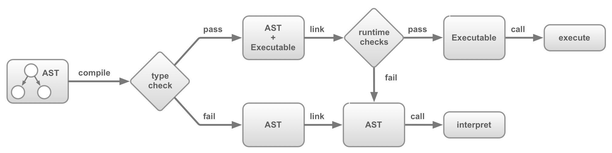

ASM.js 标准草案分析（18 August 2014）
摘要
ASM.js 是 JavaScript 的严格子集，可作为编译器的一种低级、高效的目标语言。该子语言有效地描述了针对内存不安全语言（例如 C/C++。如：指针可能指向非法值、数组访问可能越界）的沙盒虚拟机。一种静态和动态验证相结合的方式使得 JavaScript 引擎可以针对有效的 ASM.js 代码采用 AOT 优化编译策略。
编程模型（Programming Model）
ASM.js 编程模型是围绕整数和浮点运算，以及通过 TypedArray 表示的一个虚拟的 Heap 构建的。尽管 JavaScript 不能提供用于处理整数的构造，但是可以使用以下两个技巧来模拟它们：
- 可以使用 TypedArray 的 API 来进行整数的加载和存储；
- 整数运算等价于使用整数强制转换的 JavaScript 浮点算术运算符表达式。其中整数强制转换由按位与运算符 “|” 来进行；
假设我们有一个 Int32Array 类型的 TypedArray，对应的变量名为 HEAP32。按照如下方式，我们可以从字节偏移位置 p 处加载一个 32 位整数（4 字节长度）：
HEAP32[p >> 2] | 0
位移操作将字节偏移量转换为对应的 32 位偏移量；并且按位与运算符确保当 p 访问越界时可以返回数字值而非 undefined。
以下为整数运算的一个例子：
(x + y) | 0
此编程模型直接受 Emscripten 和 Mandreel 编译器所开创技术的启发。
验证方法（Validation）
ASM.js 子语言由静态类型系统定义，可以在 JavaScript 解析（Parsing）时进行检查。ASM.js 代码的验证被设计为“按需付费”的模式，因为它永远不会在不被要求的代码上执行。一个 ASM.js 模块通过特殊的序言指令请求验证，类似于 ECMAScript Edition 5 中声明严格模式的指令：
function MyAsmModule() {
"use asm";
// module body
}
此显式指令使得 JavaScript 引擎可以避免对其他 JavaScript 代码执行无意义且可能需要高昂成本的验证过程。并且仅在与 ASM.js 相关时，才会在 Console 控制台中报告相关的验证错误。
AOT 编译
由于 ASM.js 是 JavaScript 的严格子集，因此规范仅定义了 ASM.js 代码的验证逻辑，而执行语义则与 JavaScript 保持相同。但是，经过验证的 ASM.js 代码可以进行 AOT 编译。此外，由 AOT 编译器生成的代码可以非常高效，其特点是：
- 可以使用 unboxed 形式的整数和浮点数；
- 没有运行时的类型检查；
- 没有垃圾收集（GC）；
- 高效的 Heap 堆资源加载和存储（实现方式因平台而异）；
无法验证的代码必须通过传统方式重新执行，例如解释和/或即时（JIT）编译。
链接
使用 ASM.js 模块要求调用模块对应的函数以获得包含有导出方法（exports）的对象，这称为链接（Linking）。还可以通过链接为 ASM.js 模块提供对标准库和自定义 JavaScript 函数的访问权限。为了能够使用编译后的代码，AOT 实现必须执行某些动态检查，以检查有关被链接库的一些编译时假设。
下图描绘了 AOT 实现的简单体系结构，或采用简单的解释器。如果动态或静态验证失败，则实现必须回退到解释器。但是，如果两个部分的验证均成功，则调用模块导出的方法时将会使用由 AOT 生成的二进制可执行代码。

外部代码和数据
在 ASM.js 模块中，所有代码均是完全静态类型的，并且仅限于非常严格的 ASM.js 方言。但是，模块也可以与可识别的标准 JavaScript 库函数，甚至自定义的动态 JavaScript 函数进行交互。
一个 ASM.js 模块（实现形式为一个 JavaScript 函数）最多可以使用三个可选参数，从而可以访问外部 JavaScript 代码和数据：
- 一个标准库对象，提供对 JavaScript 有限标准库子集（Math）中方法的访问;
- 一个 FFI 接口，提供外部 JavaScript 函数的访问；
- 一个 Heap，提供一个 ArrayBuffer 类型以作为 ASM.js 模块的堆结构；
这些对象允许 ASM.js 调用外部的 JavaScript（并与外部 JavaScript 共享其 Heap 堆缓冲区）。相反，从模块导出的对象允许外部 JavaScript 调用 ASM.js。
因此，在一般情况下，一个 ASM.js 的模块声明如下所示：
function MyAsmModule(stdlib, foreign, heap) {
"use asm";
// module body...
return {
export1: f1,
export2: f2,
// ...
};
}
在函数定义的开始部分，通过使用类型注解（Type Annotation）来“显式”地标注函数参数类型：
function geometricMean(start, end) {
start = start|0; // start has type int
end = end|0; // end has type int
return +exp(+logSum(start, end) / +((end - start)|0));
}
使用这些注解有两个目的：首先，提供函数的类型签名，以便 Validator 可以保证所有对该函数的调用都是类型定义良好的。其次，要确保即使函数是从模块导出并由外部 JavaScript 调用的，其参数也会被动态强制转换为预期的类型。这确保了 AOT 实现可以使用 unboxed 的值表示形式。因为一旦动态强制类型转换完成后，函数主体就不再需要进行任何的运行时类型检查。
把所有部分放在一起
以下是一个小而完整的 ASM.js 模块示例。
function GeometricMean(stdlib, foreign, buffer) {
"use asm";
var exp = stdlib.Math.exp;
var log = stdlib.Math.log;
var values = new stdlib.Float64Array(buffer);
function logSum(start, end) {
start = start|0;
end = end|0;
var sum = 0.0, p = 0, q = 0;
// asm.js forces byte addressing of the heap by requiring shifting by 3
for (p = start << 3, q = end << 3; (p|0) < (q|0); p = (p + 8)|0) {
sum = sum + +log(values[p>>3]);
}
return +sum;
}
function geometricMean(start, end) {
start = start|0;
end = end|0;
return +exp(+logSum(start, end) / +((end - start)|0));
}
return { geometricMean: geometricMean };
}
在支持对 ASM.js 进行 AOT 编译的 JavaScript 引擎中，当在合适的全局对象和堆缓冲区（ArrayBuffer）上调用模块将会链接导出对象，以便使用静态编译的函数。
var heap = new ArrayBuffer(0x10000); // 64k heap
init(heap, START, END); // fill a region with input values
var fast = GeometricMean(window, null, heap); // produce exports object linked to AOT-compiled code
fast.geometricMean(START, END); // computes geometric mean of input values
相比之下，在包含非标准库函数（Math.exp 与 Math.log）的对象上调用模块，将无法生成 AOT 编译的代码（将会回退到 Interpreter 或 JIT 版本的代码）：
var bogusGlobal = {
Math: {
exp: function(x) { return x; },
log: function(x) { return x; }
},
Float64Array: Float64Array
};
var slow = GeometricMean(bogusGlobal, null, heap); // produces purely-interpreted/JITted version
console.log(slow.geometricMean(START, END)); // computes bizarro-geometric mean thanks to bogusGlobal
类型
对 ASM.js 模块的验证依赖于对语法进行分类和约束的静态类型系统。本节定义了验证逻辑所使用的类型。
值类型
ASM.js 的验证机制限制了 JavaScript 程序只能使用可以紧密映射到现代体系架构的有效数据表示形式和机器操作。例如 32 位整数以及相关的整数算术。
ASM.js 值的类型通过子类型关系相互关联，可以用下图表示：
浅色方块代表符合该类型的 JavaScript 任意值，这些值可以在 ASM.js 代码和外部 JavaScript 代码之间自由流动（可以理解为当从外部 JavaScript 传回 ASM.js 时，值得类型不会发生改变）。
深色方块表示不允许转义为外部 JavaScript 代码的类型。（可以在优化的 ASM.js 实现中为这些值提供高效的，unboxed 的表示形式。而如果允许它们转义，则行为将是不健全的）。
元变量 σ 和 τ 用于表示值类型。
void
用于标识不返回任何有用值的函数类型。对于 JavaScript 函数，它们会产生 undefined 值，但是 ASM.js 代码无法使用该值。调用具有 void 返回类型的函数只是为了函数产生的副作用而非返回值。
double
即 JavaScript 中数字值对应的双精度浮点类型。
signed
该类型表示带符号的 32 位整数类型。尽管在 JavaScript 中没有直接对应的整数概念，但是 32 位整数可以被表示为 double 类型，并且可以使用 JavaScript 的算术、关系和按位运算符来执行整数运算。
unsigned
该类型表示无符号的 32 位整数类型。同样的，它们不是 JavaScript 中的第一类概念，但可以用 double 类型来进行表示。
int
表示符号性（signedness）未知的 32 位整数类型。在 ASM.js 中，无法确定一个变量类型的符号性。这样就可以将它们编译为 32 位整数寄存器和内存字。但是，这种表示法会在有符号数和无符号数之间产生重叠，从而导致在确定它们所表示的实际 JavaScript 数字值时存在歧义。例如，0xffffffff 根据符号性的不同，可以表示 4294967295 或 -1。因此，int 类型的值不允许转义为外部的 JavaScript 代码。
- 对于一段 4 字节的内存模式为 0xffffffff 的内容，如果将其按照 unsigned 解析：
0xffffffff >>> 0结果为 4294967295；若按照 signed 解析：0xffffffff >> 0，结果为 -1。WebAssembly 中对应的整数类型 i32 与 i64 与此类似，解析的具体值按具体的指令为主； - 这里的 0xffffffff 按照补码形式来存放；整数，补码与原码相同；负数，补码符号位不变，其他位取反再加一；
fixnum
该类型表示 [0，2^31) 范围内的整数值，即一个整数范围。这样无论将unboxed 的 32 位表示形式解释为带符号的还是无符号的，其值都相同。
intish
即使 JavaScript 仅支持浮点数运算，大多数操作也可以通过将其结果强制转换为整数来模拟整数算术。例如，将两个整数相加可能会超出 32 位的范围，但是将运算结果强制转换为整数，会产生与在 C 中进行整数加法相同的 32 位整数。
该 intish 类型表示 JavaScript 整数操作的结果，该结果必须通过显式强制转换将其转换为整数。验证要求将所有 intish 的值立即传递给执行强制转换的运算符或标准库函数，或者通过表达式语句删除该值。这样，每个整数运算都可以被直接编译为对应的机器运算。
不支持这种方法的一个运算符是乘法运算符。（将两个大整数相乘可导致精度的损失）因此，ASM.js 不支持将乘法运算符应用于整数操作数。相反，建议将 Math.imul 函数作为实现整数乘法的适当方法。
double?
该类型表示预期会产生 double 但也可能会产生 undefined 的操作，因此必须通过 ToNumber 将其强制转换回数字。具体来说，返回越界的 TypedArray 元素也会产生 undefined。
float
该类型表示 32 位浮点数。
float?
该类型表示预期会产生 float 但也可能会产生 undefined 的操作，因此必须通过 Math.fround() 将其强制转换回 32 位浮点数。具体来说，返回越界的 TypedArray 元素也会产生 undefined。
floatish
与 intish 类似。
extern
抽象的 extern 类型表示所有可以转义回外部 JavaScript 的类型的根。
全局类型
（略）
环境
（略）
语法
ECMAScript 的语法规则指定了对 ASM.js 模块的验证细则，但从概念上讲，该验证在抽象语法级别进行。特别是，一个 ASM.js 验证器必须遵守以下规则：
- 空语句（;）始终会被忽略。无论是出现在模块的顶层还是在 ASM.js 函数定义内部；
- 绑定在 ASM.js 模块中任何地方的变量（无论在模块函数参数列表，全局变量声明，ASM.js 函数名称，ASM.js 函数参数或局部变量声明中）都不能使用 eval 或 arguments。
- 如果用 JavaScript 等效地解析，括号是没有意义的。即使规范与 Expression 的特定生成（例如文字）匹配，来源也可能包含多余的无意义的括号，而不会影响验证；
- ASI（Automatic Semicolon Insertion）不会影响 ASM.js 模块的验证过程。只要确保在 JavaScript 层面，忽略某些分号是合法的即可；
注解
参考：https://github.com/Becavalier/human-asmjs。
验证（静态验证）
为了确保 JavaScript 函数定义可以正确地表示一个 ASM.js 模块，必须首先对其进行静态验证。本节指定验证规则。规则将在 JavaScript 的抽象语法树上进行。非终结符引用 ECMAScript 语法中的产生式定义的解析节点。但请注意，ASM.js 验证器仅接受合法JavaScript 程序的子集。
验证操作的结果可以是成功（表明解析节点是静态有效的 ASM.js），或者是失败（表明解析节点静态为无效的ASN.js）。
（略）
链接（动态验证）
一个 ASM.js 的 AOT 实现必须在链接时执行一些内部的动态检查，以便能够安全地生成经过 AOT 编译的导出函数。如果任何动态检查失败，则链接的结果便不能为经过 AOT 编译的模块。动态检查包括：
- 控制流在到达模块的 return 语句前不能抛出异常；
- 所有属性访问操作都必须解析为数据属性；
- 堆对象（如果提供的话）必须的一个 ArrayBuffer 的实例;
- 堆对象的 byteLength 必须是 2^n（n 在 [12, 24）之间），或 2^24 * n（n ≥ 1）;
- 从 stdlib 对象上获取的方法必须与对应标准库同名函数具有相同的值（SameValue）。
如果不满足这些条件中的任何一个，则 AOT 编译可能会产生无效的结果，因此 JavaScript 引擎应退回到解释器或基于 JIT 的实现中。
补充记录
- ASM.js 使用了 Annotation（形式上。比如在 BNF 中 “|0” 直接表示一个终结符，而非运算符）与 Operator（实际运算结果）相结合的方式来保证继承自 C/C++ 的变量能够满足特定类型值的取值范围要求。比如 “x:Identifier**|0” 可以确保 x:Identifier 是 int 类型。而 “x:Identifier >>> 0” 的计算结果**可以保证 x:Identifier 是 unsigned 类型。
- 怀疑 ASM.js 相较 Native Code 可能变慢的一个点是：C/C++ unsigned -> ASM.js (unsigned)((double) >>> 0)。运算符计算会产生额外的 Overhead？
- “|0” 会将变量转换（cast）为一个 Signed 类型的整数；
- JavaScript 的按位逻辑运算符会对编码为 IEEE-754 的浮点数进行计算。按位运算符首先将整数截断（32 位），然后在执行按位运算前为其操作数做模转换，获得 32 位二进制补码值。因此可以通过
x|0或x >> 0（算数右移）将数字值 x 强制转换为 32 位有符号整数值。对于无符号数，则可以通过x >>> 0（逻辑右移）进行转换。